ggplot(county) +
geom_point(aes(x = median_edu, y = median_hh_income)) +
geom_boxplot(aes(x = smoking_ban, y = pop2017))HW 1
Viz dat, wrangle dis!
For any exercise where you’re writing code, insert a code chunk and make sure to label the chunk. Use a short and informative label. For any exercise where you’re creating a plot, make sure to label all axes, legends, etc. and give it an informative title. For any exercise where you’re including a description and/or interpretation, use full sentences. Make a commit at least after finishing each exercise, or better yet, more frequently. Push your work regularly to GitHub. Once you’re done, inspect your GitHub repo to make sure it has all the components you want to submit in the hw-1.md file, including the prose, the code, and all plots.
Question 1
NYC marathon winners.
The New York City Marathon is an annual marathon (26.2 miles / 42.195 kilometers) that courses through the five boroughs of New York City. Marathon times of runners in the Men and Women divisions of the New York City Marathon between 1970 and 2020 can be found in the nyc_marathon dataset in the openintro package (which is already installed for you). You can find out more about the dataset by inspecting its documentation with ?nyc_marathon and you can also find this information here.
a. Create a histogram and a box plot of the distribution of marathon times of all runners in the dataset. What features of the distribution are apparent in the histogram and not the box plot? What features are apparent in the box plot but not in the histogram?
b. Create a side-by-side box plots of marathon times for men and women. Use different colors for the each of the box plots – do not use the default colors, but instead manually define them (you can choose any two colors you want). Based on the plots you made, compare the distribution of marathon times for men and women.
c. What information in the above plot is redundant? Redo the plot avoiding this redundancy. How does this update change the data-to-ink ratio?
d. Visualize the marathon times of men and women over the years. As is usual with time series plot, year should go on the x-axis. Use different colors and shapes to represent the times for men and women. Make sure your colors match those in the previous part. Once you have your plot, describe what is visible in this plot but not in the others.
Question 2
US counties.
The following questions use the county dataset in the openintro package. You can find out more about the dataset by inspecting its documentation with ?county and you can also find this information here.
a. What does the following code do? Does it work? Does it make sense? Why/why not?
b. Which of the following two plots makes it easier to compare poverty levels (poverty) across people from different median education levels (median_edu)? What does this say about when to place a faceting variable across rows or columns?
ggplot(county |> filter(!is.na(median_edu))) +
geom_point(aes(x = homeownership, y = poverty)) +
facet_grid(median_edu ~ .)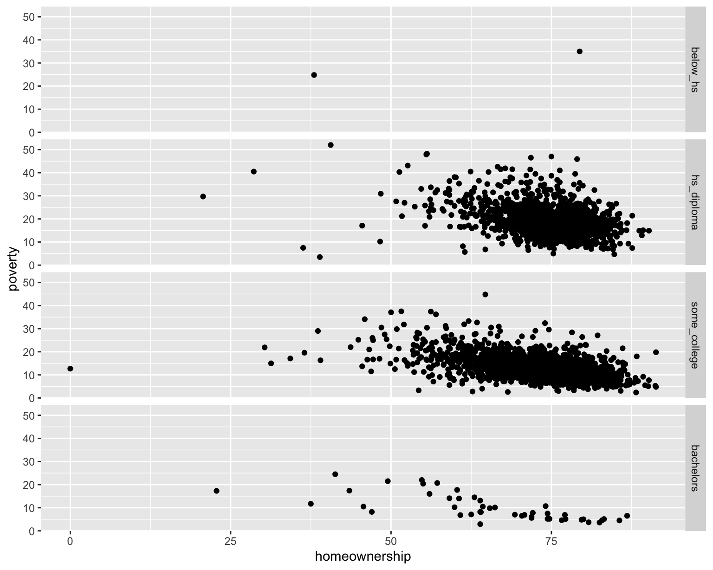
ggplot(county |> filter(!is.na(median_edu))) +
geom_point(aes(x = homeownership, y = poverty)) +
facet_grid(. ~ median_edu)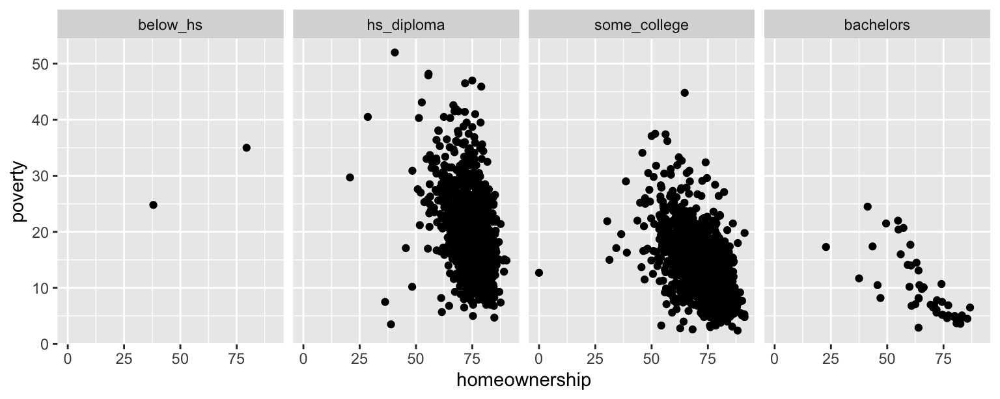
c. Recreate the R code necessary to generate the following graphs. Note that wherever a categorical variable is used in the plot, it’s metro.
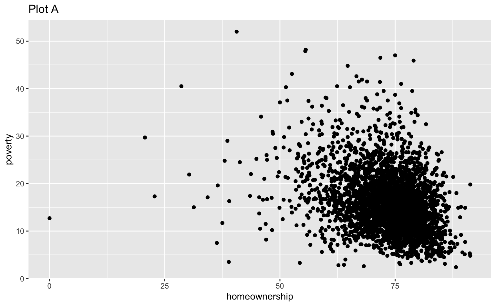
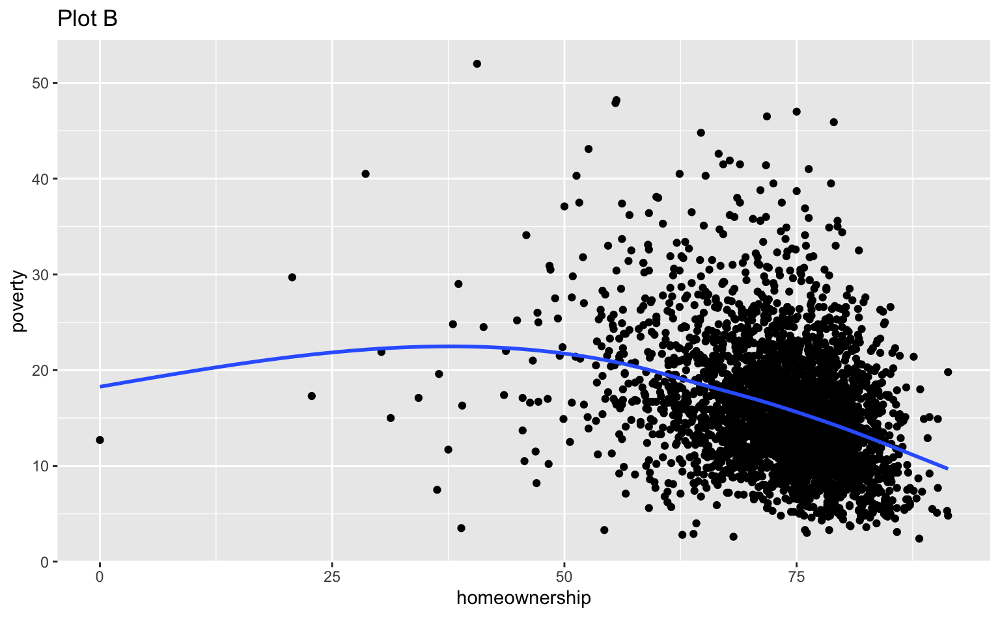
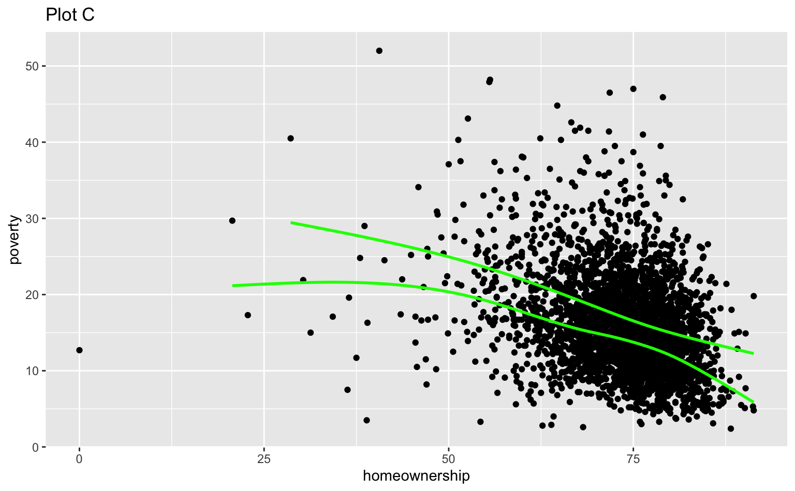
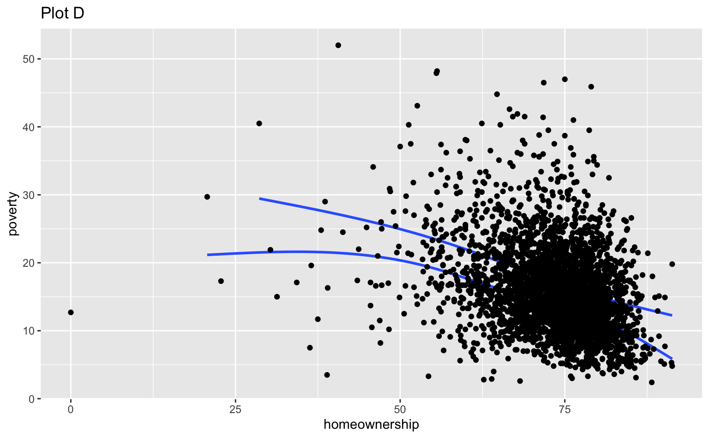
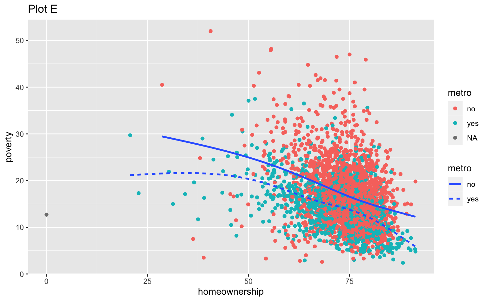
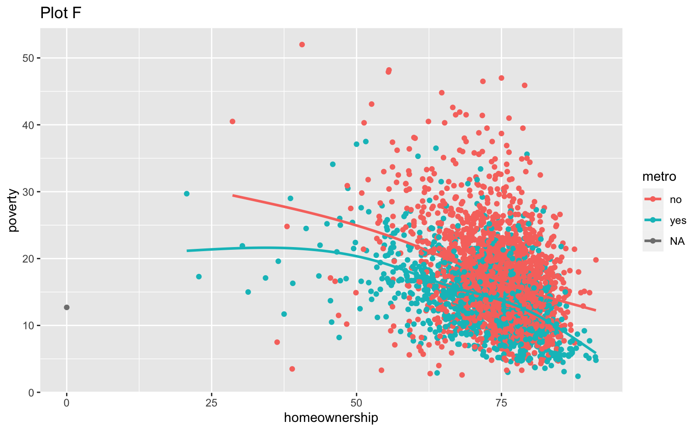

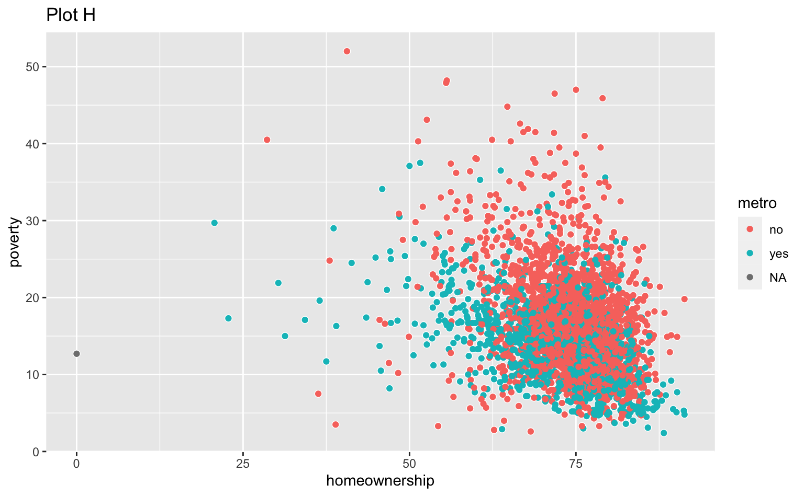
Question 3
Credit card balances.
The data for this exercise is on credit card balances. The dataset is in the data folder of your repository, and it’s called credit.csv. It contains the following variables:
balance: Credit card balance in $income: Income in $1,000student: Whether the individual is a student (Yes) or not (No)married: Whether the individual is a married (Yes) or not (No)limit: Credit limit
a. Recreate the following visualization. The only aspect you do not need to match are the colors, however you should use a pair of colors of your own choosing to indicate students and non-students. Choose colors that appear “distinct enough” from each other to you. Then, describe the relationship between income and credit card balance, touching on how/if the relationship varies based on whether the individual is a student or not or whether they’re married or not.
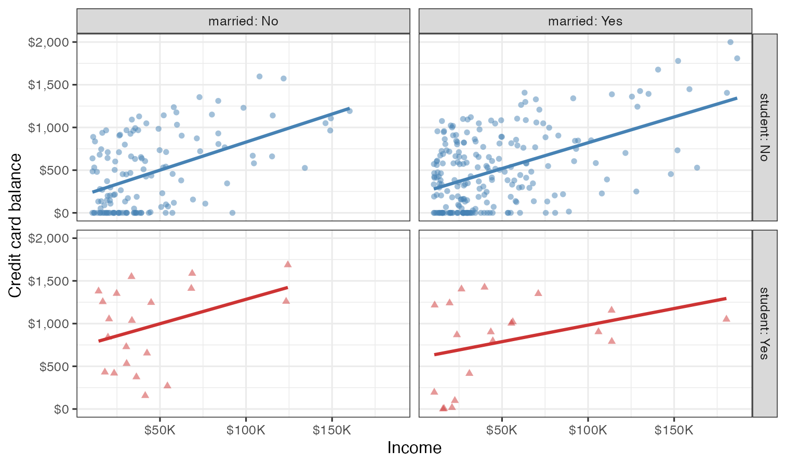
b. Based on your answer to part (a), do you think married and student might be useful predictors, in addition to income for predicting credit card balance? Explain your reasoning.
c. Credit utilization is defined as the proportion of credit balance to credit limit. Calculate credit utilization for all individuals in the credit data, and use it to recreate the following visualization. Once again, the only aspect of the visualization you do not need to match are the colors, but you should use the same colors from the previous exercise.
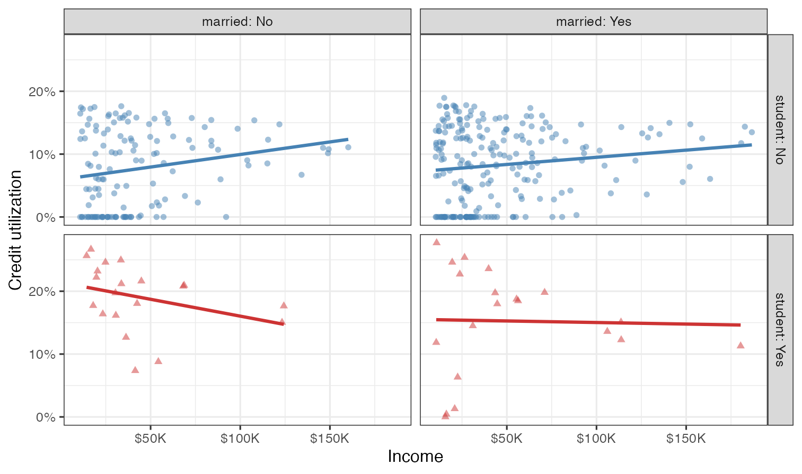
d. Based on the plot from part (c), how, if at all, are the relationships between income and credit utilization different than the relationships between income and credit balance for individuals with various student and marriage status.
Question 4
Expect More. Plot More.
Make the following image (it’s the logo for the retail store Target) using ggplot2. Write a few sentences describing your approach.
Some tips:
- I didn’t give you a dataset to plot, you’ll need to make one. Use
tibble()ortribble()to do that again. It really doesn’t matter what you choose to include in that dataset as long as you achieve the final look. - The red used in the plot is the “Target red”, you can google and find out what that is. Don’t forget to cite your source for this too!
- The registered trademark symbol (R in a circle) can be a bit trickier to figure out. There is a only a very small number of points associated with that component of the plot. So think of it as a “stretch goal” and work on figuring out the rest of the plot first.
- The aspect ratio of of your plot in your Quarto document is just as important as the plot. Once you figure out the code to make the plot, knit your document to make sure it looks good in the output of your Quarto document.
- There are many ways you can do this, feel free to discuss with classmates but fight the urge to adopt their approach. Instead, try to come up with your unique one.
Question 5
Napoleon’s march.
The instructions for this exercise are simple: recreate the Napoleon’s march plot by Charles John Minard in ggplot2. The data is provided as a list, saved as napoleon.rds in the data folder of your repo. Read it in using read_rds(). This object has three elements: cities, temperatures, and troops. Each of these is a data frame, and the three of them combined contain all of the data you need to recreate the visualization. Your goal isn’t to create an exact replica of the original plot, but to get as close to it as you can using code you understand and can describe articulately in your response. I’ll be the first to say that if you google “Napoleon’s march in ggplot2”, you’ll find a bunch of blog posts, tutorials, etc. that walk you through how to recreate this visualization with ggplot2. So you might be thinking, “why am I being asked to copy something off the internet for my homework?” Well, this is an exercise in (1) working with web resources and citing them properly, (2) understanding someone else’s ggplot2 code and reproducing their work, (3) describing what that code does in your own words, and finally (4) putting some final touches to make the final product your own. Some more guidelines below:
You should make sure your response properly cites all of the resources you use. I’m defining “use” to include “browse, read, get inspired by, or directly borrow snippets of code from”. You don’t need to worry about formal citations, it’s okay to make a list with links to your resources and provide a brief summary of how you used each one.
For this exercise, you’re asked to describe what your code does (instead of interpreting the visualization, since we already did that in class). If you write the code, it should be straightforward for you to describe it. If you borrow any code from outside resources, you need to understand what that code does, and describe it, in your own words. (This is important, you’re allowed to use found code, but you are not allowed to copy someone’s blog post or tutorial as your description of their code.)
Finally, you should personalize the visualization with your own touch. You can do this in a myriad of ways, e.g., change colors, annotations, labels, etc. This change should be made to make the plot more like the original in some way. You need to explicitly call out what change you made and why you made it.